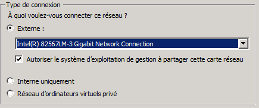
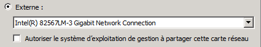
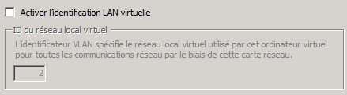
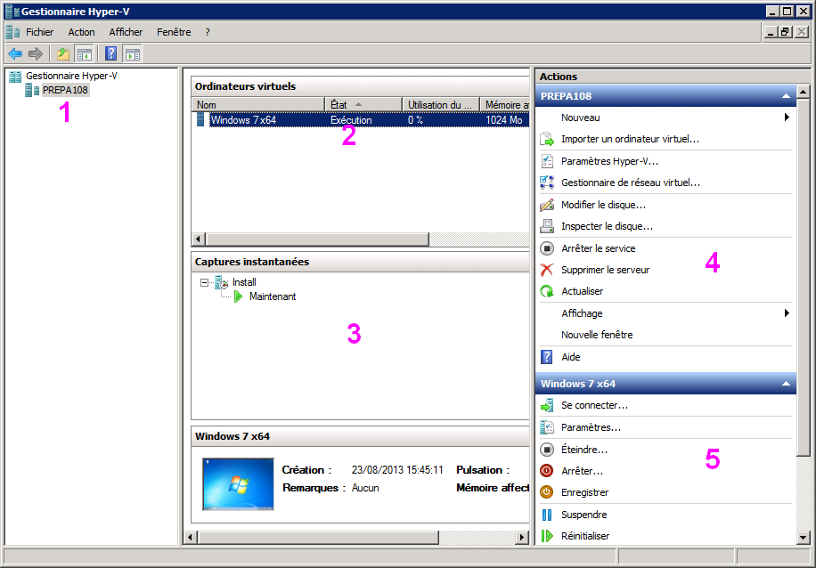
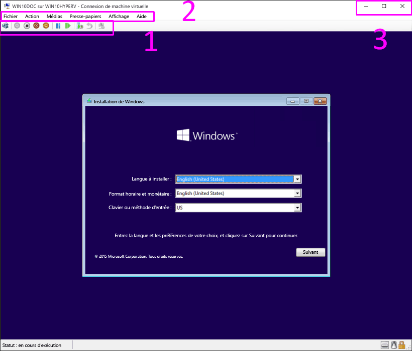
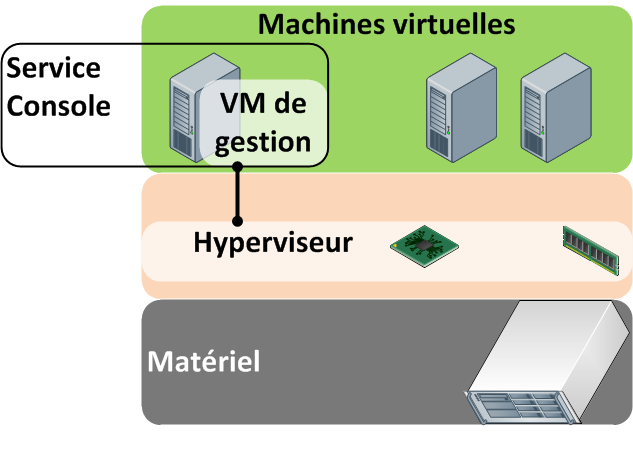
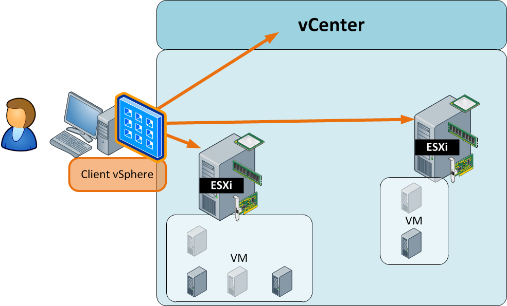

ENI TSSR 12 - Virtualisation
Des concepts de la virtualisation à leur mise en oeuvre.
Sommaire
- Module 1 - Présentation
- Module 2 - Les applications de virtualisation d’environnements sur un poste de travail
- Module 3 - La virtualisation de serveurs
- Module 4 - Découverte d’Hyper V
- Module 5 - Les composants d’une infrastructure vSphère
- Module 6 - Gestion du réseau
- Module 7 - Gestion du stockage
- Module 8 - Gestion du datacenter
Objectifs
- Définir les termes de mutualisation, consolidation et rationalisation et différencier les hyperviseurs de type 1 et 2
- Enoncer les caractéristiques des offres de SaaS, PaaS et SaaS
- Lister un ensemble de solutions de virtualisation et de services virtualisés
- Décrire les composants d’une infrastructure vSphère
- Configurer le réseau d’un ESXi afin de répondre à des besoins ciblés
- Configurer le stockage local ou partagé
Module 4 - Découverte d’HYPER-V
Prérequis et installation
Prérequis matériel
- Processeur 64 bits Intel VT-x ou AMD-V (attention aux réglages BIOS/UEFI)
- CPU, RAM et espace disque adaptés
Prérequis logiciel
- Un système Windows Server (W2008 ou supérieur)
- ou un système W8 Pro x64 bits (+ SLAT Secont Level Address Translation)
Installation
- Versions : Hyper-V v2 (W2008 R2), Hyper-V v3 (W8, W2012)
- Pour les serveurs, rôle intégré à installer avec le gestionnaire de serveur
- Pour le client Windows 8, fonctionnalité intégrée à activer
Lors de l’installation du rôle, 2 redémarrages sont nécessaires pour permettre le redémarrage de l’hyperviseur en mode natif (type 1).
Utilisation et mise en oeuvre
Intéraction avec le système hôte
- Les médias amovibles USB ne sont pas gérés avec la v2 (W2008 R2)
- Touche de bascule : CTRL + ALT + GAUCHE
- Services d’intégration (selon la compatibilité des systèmes hôtes)
Fonctionnalités
- Chaque VM peut être affichée dans une console séparée
- Gestion poussée des paramètres matériels (BIOS, mémoire, etc.)
- Capture instantanée
- Importation et exportation (obligatoire avec la v2 pour la copie ou le transfert)
Spécificités
- Outil “serveur” orienté administrateur, moins convivial
- Fichiers des VM difficilement manipulables manuellement
- Pour faire CTRL + ALT + SUPPR dans la VM, CTRL + ALT + FIN
Paramétrages réseau
|
|  |
|  |
|  |
Console de gestion
|
 |
Etapes de configuration
Définition des réseaux virtuels
- Avec l’outil Gestionnaire de réseau virtuel (volet de droite de la console)
- Non définis par défaut, à créer selon les besoins
- Un seul réseau externe est possible par carte réseau hôte (Hyper-V “s’approprie” la carte réseau physique)
Création des VM
- Avec l’assistant Nouveau > Ordinateur virtuel
- Définir l’emplacement de stockage et les paramètres matériels
Le disque d’amorçage d’une VM de première génération est obligatoirement sur une interface de type IDE.
Console d’ordinateur virtuel
|
 |
Exportation et importation
Des manipulations plus contraignantes (avec Hyper-V v3)
- Pour pouvoir être dupliquée ou déplacée, une VM doit être exportée
- Pour pouvoir importer, il faut disposer des fichiers de configuration
- L’importation sans “Dupliquer tous les fichiers” empêche de réimporter la même VM.
- L’option “Dupliquer tous les fichiers” permet d’utiliser plusieurs fois la même VM exportée, MAIS les disques VHD sont alors copiés dans un même emplacement
Exemple de procédure
- Exporter la VM dans un emplacement dédié
- Copier le répertoire contenant la VM à l’emplacement voulu
- Importer la VM sans “Dupliquer les fichiers…“
REMARQUE : Attention à bien sélectionner le dossier contenant tous les fichiers.
Atelier 2 - Hyper-V
Voir Atelier 2 - HYPER-V
Module 5 - Les composantes d’une infrastructure vSphere
De vSphere 5 à vSphere 6
|
 |
Composantes d’une solution vSphere
| Element | Nom dans VMware |
|---|---|
| Solution de virtualisation | vSphere |
| Hyperviseur | ESXi / ESX |
| Client d’administration | client vSphere / vSpere web client |
| Solution de regroupement d’hyperviseurs | vCenter |
Attention, les versions des différents éléments d’une infrastructure vSphere doivent concorder ! (?)

Les principales fonctionnalités
| Fonctionnalités | Utilité |
|---|---|
| vMotion | Déplacement de VM d’un hôte vers un autre hôte. |
| Storage vMotion | Déplacement du stockage d’une VM d’une banque de données vers une autre bdd |
| DRS | Automatisation du déplacement de VM d’un hôte vers un autre hôte disposant de plus de ressourcess. |
| Storage DRS | Automatisation du déplacement de VM d’un datastore vers un autre disposant de plus de ressources. |
| DPM | Fonctionnalité permettant d’automatiser l’entrée et la sortie de veille d’hyperviseurs en fonction de la charge d’activité du cluster. |
| HA | High Availability : Fonctionnalité de haute disponibilité. Lors de la défaillance d’un hôte, les VM ciblées seront redémarrées sur un autre hôte du cluster. |
| FT | Fault Tolerance : Fonctionnalité de très haute disponibilité protégeant des VM ciblées de la défaillance d’un hôte. Aucune interruption de service n’affectera les VM ciblées |
Voir module 8 pour plus de détails.
Les tarifs de VMware
| Comparatif des solutions | |
|---|---|
| ESXi seul | Fonctionnalités très limitées : gratuites |
| Suite Essentials | ESXi + Gestion centralisée + Gestion des MàJ |
| Suite Essentials Plus | Suite Essentials + Haute dispo (HA) + DRS + DRS Storage |
| vSphere Standard | Suite Essentials Plus + FT + DPM |
| PME | TPE | ||||
|---|---|---|---|---|---|
| Cible | Essentials | Essentials Plus | Standard | Entreprise Plus | Platinum |
| Coût | 574.13 EUR HT | 4991.23 EUR HT | 1262.14 EUR HT | 3596.23 EUR HT | |
| La licences couvre... | Elle inclut vCenter Foundation | Qté max de RAM par hôte | |||
Les vRAM pool permettant de cumuler la quantité de mémoire des licences de chaque ESXi pour les attribuer ensuite aux VM n’est plus en vigueur sur vSphere 5.5.
Démo : découverte de la gestion d’ESXi depuis le client vSphere
Atelier 3 - vSphere
Voir l’atelier 3 - vSphere